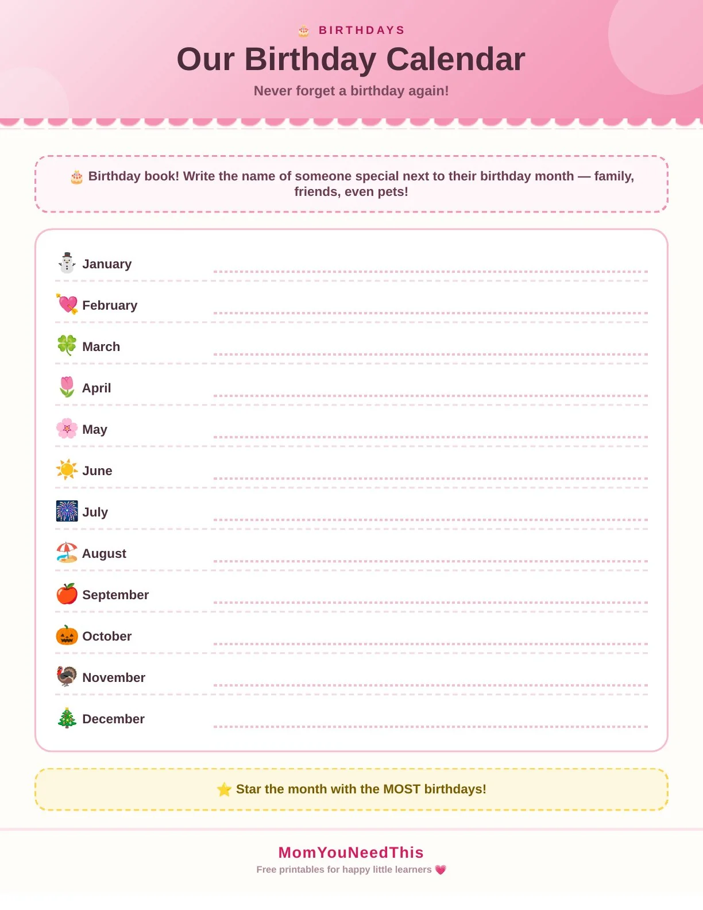

Birthday Calendar Activities Free Printable Preschool Calendar For Kids
Never miss a celebration with these free printable birthday calendar activities. It works as a first preschool calendar too: twelve months on one page, ready for every family birthday. Toddlers and preschoolers can record family birthdays and special days on their very own birthday calendar.
Quick Answer
This free printable birthday calendar activity is designed for toddlers and preschoolers ages 2-5. The worksheet includes hands-on exercises that build early learning skills through play. Download and print at home with no signup needed — no account required, just print and start learning. Think of it as a first preschool calendar: one page for a whole year of birthdays.
At a Glance
- Ages: Toddlers and preschoolers (ages 2–5)
- Activity: Recording family birthdays and special days on a calendar
- Skills: Calendar awareness and special-day planning
- Format: Printable worksheet (PDF)
- Cost: Free, no signup
🎂 Remember Special Days
Use this birthday calendar to help your child learn family birthdays, mark them on the right month, and count down to the next celebration.
Special Days to Add (Not Just Birthdays)
Birthdays are just the start. A family calendar earns its wall space when it holds every day worth counting down to:
- Holidays your family celebrates — Christmas, Thanksgiving, Easter and any others; mark each with a star or a small drawing.
- First and last day of school — big milestones for preschoolers, and perfect countdown targets.
- Family events — a grandparent's visit, a new baby's due date, a family trip.
- Your family's own days — gotcha days, half-birthdays, the first day of swimming lessons.
Let your child draw a tiny picture beside each special day — the calendar becomes a year of things to look forward to.
Free Birthday Calendar Activities

How To Use These Activities
Write family birthdays on the printable calendar together, then let your child decorate each birthday box. Count how many birthdays fall in each month. Use the printable for calendar time or family planning.
Why Keep A Birthday Calendar?
A birthday calendar makes months and dates personal. When children track real birthdays, calendar skills stick — and they get the joy of counting down to cake.
🎁 Keep Exploring Free Learning Activities
Discover more printable activities, toddler resources, and learning ideas created for busy parents.
🎁 View All Free Resources🖨️ How to Use This Printable
Get started in minutes — everything here is free and made for busy parents.
- Download the printable. Tap the download button to save the free Birthday Calendar Activities file to your device.
- Print it out. Use any home printer and regular paper — cardstock works great for pages little hands will use again and again. The print button opens the full-size page in a new tab if you prefer to print from there.
- Learn together. Sit with your child, follow the activity, and keep it playful. Short sessions work best.
- Explore more. Check the free printables linked below for your next activity.
❓ Birthday Calendar Activities FAQs
Is the Birthday Calendar Activities printable free?
Yes — every printable on MomYouNeedThis is 100% free to download and print. No signup, no payment, just tap the download button.
How do I download and print it?
Tap the download button on this page to save the file, then print it on regular paper with any home printer. Cardstock makes extra-durable pages for little hands.
What does my child learn from this activity?
A birthday calendar builds month recognition, date skills, and counting. It also teaches thoughtfulness as children remember and celebrate the people they love. On the wall, it doubles as a first preschool calendar your child can check every day.
Can I add holidays and school days, or only birthdays?
Add any day that matters to your family — holidays, the first and last day of school, visits and trips all belong on the calendar. Birthdays fill the year, and the other special days give your child even more to count down to.
How do we count down to a birthday?
Find the birthday on the calendar, then count the days or sleeps from today together. Cross off one day each morning, or colour one square per day as it passes — watching the gap shrink is the fun part.
🔗 More Free Printables You’ll Love
Pair this printable with more free learning activities from the MomYouNeedThis library.
- 📆 Days of the Week ActivitiesLearn the seven days of the week in order.
- 📅 Calendar Learning ActivitiesExplore all calendar learning activities.
- 🔤 Alphabet Coloring PagesFree A to Z alphabet coloring printables for toddlers and preschoolers.
- 🎏 Free 5-Minute Toddler ActivitiesQuick learning activities for busy little ones.